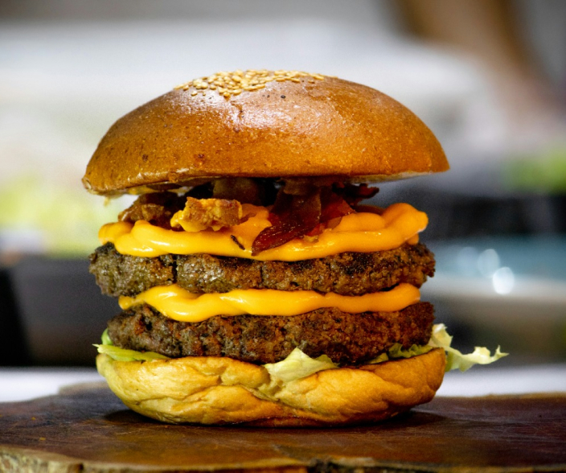
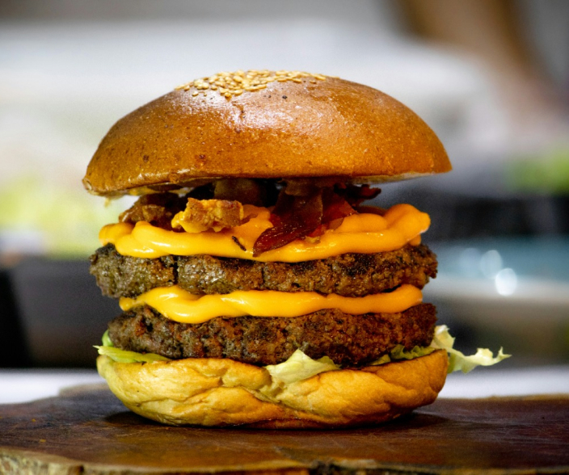
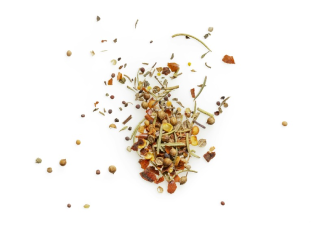

Olor a Quemado
Buenas y Bienvenidos
Qué es ésto?
Este sitio web esta creado para todos aquellos que no saben hacer ni un huevo frito, o que se mueren por replicar las recetas de Paulina pero ni idea que es cortar cebolla en juliana o simplemente para los que les gusta morfar y quieren adentrarse en el maravilloso mundo de la cocina y dejar de ser unos inutilismos (sin ofender a nadie).
 

Aprender a cocinar... para qué?
- La cocina es una excelente forma de acercar a la gente. Hacele algo rico a tu vieja que se lo merece, cociná con tus amigos mientras se ponene al día con el último chismecito, sumá puntos con ese huesito que estas roendo.
- Si tenes pibes: planaso, cocinar con chicos es un hermoso bardo. Si tenés un/a chonguit@:planaso, ojota que hay parejas que en la cocina se ladran. Si tenes amiwis: planaso, que mejor que hacer un ñoquis todos juntos y dejar la cocina dada vuelta. Si te gusta estar solo: planaso, mimate y hacete esa hamburguesa que estuviste pensando toda la semana. Ah, si es con musica: planaso x1000.
- Activa la creatividad baby! La cocina es pura creatividad, animate a mezclar sabores, educa ese paladar negro que está por ahi en algun lado.
- Aflojale al delivery y ahorra platita. With this economy? No hay presupuesto que alcance para bancar tanto pedido. Ponete las pilas y hacele un favor a tus finanzas.
- Facilita un estilo de vida mas saludable. Boe, ponele que no seas recontra fit, pero igual, está bueno llevar una dieta equilibrada y variadita, que encima mucho mas rico que tu clasico arroz con manteca de todos los días.
- Podes descubrir miiiiles de sabores e ingredientes nuevos que no tenés ni idea que existen. Vamos a ampliar un poco ese paladar y salir de lo básico. El mundo esta lleno de sabores como para quedarse siempre en lo mismo.
- No hay nada como la comida casera. Y si tuviste (o tenés la suerte de todavía tenerla) una abuela que cocina, sabés de lo que estoy hablando. De esa cocina que hace bien al corazón.
- Es divertido, terapeutico y te da independencia. Te juro que cuando le agarrás elgustito a cocinar, está tremendo. Si andas con un poqo de ansiedark, es mucho mejor que pintar una mandala (la mandala no se come). Además, ya es hora que dejes de depender de tu vieja y/o el delivery para alimentarte. Tus antepasados cazadores-recolectores van a estar orgullosos.
Algunos tips para arrancar

Arrancá con lo básico
A manejar la paciencia que para el pato a la naranja todavía falta un poco. Empeza con recetas simples y seguí el paso a paso para ir familiarizandote un poco.
Tenete los ingredientes listos
Para tener todo un poco mas organizado está bueno tener ya los ingredientes preparados como los vas a usar. El multitasking viene con el tiempo.
Sin miedo a los condimentos
El buen uso de condimentos es la clave para cualqueir plato. Usalos, experimentá pero la recomendación es estra un poco familiariazo con su uso y medidas

Manejame esa frustración
Es IMPOSIBLE no pifiarla en la cocina, nos pasa a todos. No te desanimes, que la práctica hace al maestro. Chekea la sección de inspiración para tener más datita y no frustrate taaaanto.